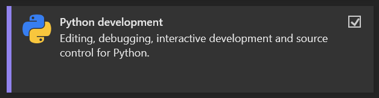
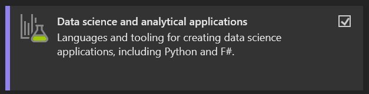
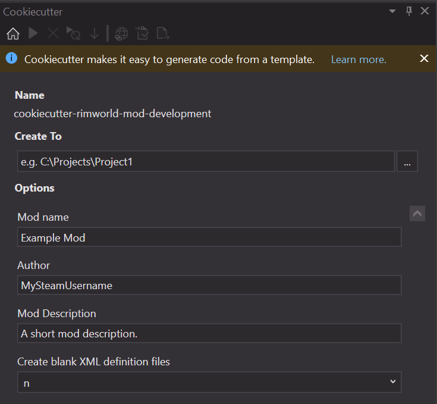
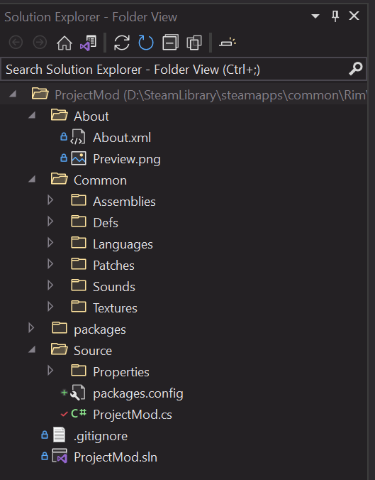
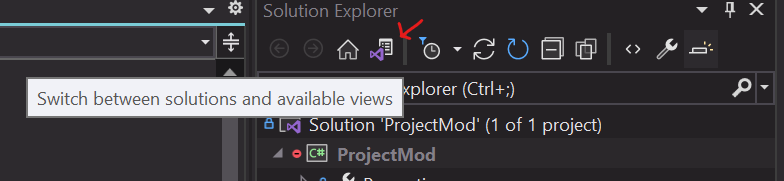

This section details the steps required to set up an environment for developing a mod that will use custom C# code. If you intend only to add simple Defs, see [PAGE TODO] for instructions for an XML only mod. With that said, this process will also produce the correct hierarchy for pure XML modding as well.
A minimally fundamental understanding of the C# language and syntax are strongly recommended for nontrivial projects. However, it is possible to get started regardless of how much you understand. All it really takes is time and practice.
The specific setup processes included in this guide are targeted towards developers with windows systems.
The instructions that follow are roughly the same as those described in this video:
Prerequisites
Git is a version control tool. Familiarity with the specifics of git is not necessarily required to develop mods for Rimworld, but it must be installed for later parts of the setup to work. Version control is a great way to keep your work safe, so I definitely recommend that you use it for your projects if you don't already.
You can download git here. Simply run the installer and you should be all set.
Python is a programming language. Don't worry, you don't need to learn it. In the same sense as git, you just need to have python installed for the rest of this process to work. I recommend that you download a version of python later than 3.4 since these later versions come with pip preinstalled. Pip is a useful package management system that makes it much easier to install new python packages - this will be important in a bit.
You can download python here. Verify that pip is installed as well by typing
pip help
into a command prompt.
Cookiecutter is a command-line tool for creating projects from predefined templates. It makes setting up new Rimworld mod projects very simple.
You can install cookiecutter by typing
pip install cookiecutter
into a command prompt as long as git, python, and pip are installed correctly.
Visual Studio
Microsoft Visual Studio is a fully-featured IDE that can be used for a larger variety of projects than just C#.
First, go ahead and download the Visual Studio installer here. There should be a button conveniently labeled 'Download Visual Studio' that will allow you to download the free community edition. This guide is based on the 2022 version.
Once the installer is downloaded, run it. If you've used visual studio before for different projects, you'll need to click a button labeled 'Modify' to modify your installation. Otherwise, you should see a list of workloads to select from.
There are a couple of specific workloads that are required for this particular setup.


These two workloads ensure that the Visual Studio install includes options that are necessary later on. It may also be worth adding the .NET Desktop Development Workload as well. Truthfully, I'm not exactly sure if all of these are strictly required, but I have all three and that works.
Now you can go ahead and click the 'Install' or 'Modify' button in the bottom right corner of the installer window. This will take longer if it's your first install since Visual Studio takes up a few gigabytes of storage on its own.
At this point, we're done with installations. Next up is the project configuration.
New Project Setup
This is the easy part. With Visual Studio open, navigate the top bar menu as follows:
File > New > From Cookiecutter...
You should see a window pop out of the left side of Visual Studio, appropriately titled 'Cookiecutter'. This window allows you to search for specific project templates for Visual Studio. In the search bar, type 'rimworld' and press enter. There should be one result labeled 'n-fisher/cookiecutter-rimworld-mod-development' under the 'GitHub' section in the search results. Double click that result.
If Visual Studio seems to crash, that's fine. Just reopen it and try again. This time, though, the rimworld template should show up under the 'Installed' templates section of the search before you type anything in. If you double click it this time, you should see a form like the one pictured below.

Create To
This field specifies the folder that your project will be created in. I recommend that you create a new folder in your Rimworld mods folder (e.g. C:/.../steamapps/common/Rimworld/Mods/YourMod) because that way the mod will be available for testing immediately without you having to move any files.
Mod name
This is the name of your mod. It will be displayed in-game as you type it in here.
Author
This is you. The template recommends that you use your Steam username because it will generate a link to the workshop page of the Steam user with the name you specify here. You can always change or remove the link manually later.
Mod Description
This is a description of your mod. You can write as much or as little here as you want, and you can always change it later (it might also be easier in a text editor).
Create blank XML definition files
As far as I know, this option (if you change it to 'y') will create some empty XML def files in certain directories within the project hierarchy.
When you're done with the template, just click 'Create and Open Folder' to create the project. You should see a file structure similar to the one pictured below appear on the right in the Solution Explorer.

Finalizing the Setup
At this point, the project setup is just about done. There are just a couple of things that are worth doing to make sure everything is configured correctly.
First, double click the .sln file in the solution explorer on the right. It should have the same name as your mod. This will change the layout of the solution explorer, but that's fine. You can always switch back to the file view with the button pictured below.

Next, open the C# file (.cs) with the same name as your mod. This is the main entry point for your mod code. In order to make sure that the project dependencies are set up correctly, add
using Rimworld;
to the top of the file below any other
using
statements. If Rimworld is not underlined in red, you're done.